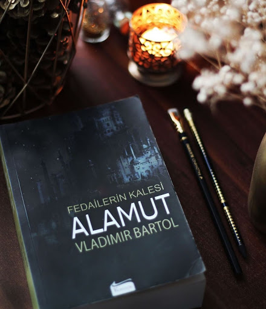
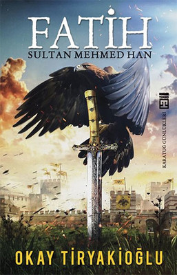

Robinson Crusoe
Bu kitapta, İngiltere’de yaşayan Robinson Kreutzner’in dünyayı gezme hayalleriyle ailesini arkada bırakarak çıktığı yolculukta başına gelenler ve sonrası anlatılmaktadır. Seyahat ettiği geminin batması sebebiyle ıssız bir adada yirmi sekiz yıl boyunca başından geçenleri Robinson’un kendi ağzından, açık ve anlaşılır bir dille okumaktayız. Elindeki imkânları olabilecek en iyi şekilde kullanan Robinson ıssız adada vahşi hayat ve korsan tehlikesinin içerisinde kendine küçük bir dünya kurar. İsyan etmeyen, pes etmeyen Robinson bize çalışarak her şeyin üstesinden gelinebileceğini gösterir. Adadaki hayatının son yıllarına dahil olan Cuma Robinson’a hem adada hem de sonrasında yarenlik eder. ‘’Robinson Crusoe'nun Yeni Serüvenleri’’ adı verilen ikinci kitapta ise Robinson’un tekrar denize açılması ve ticaret yapması gibi ıssız adadan döndükten sonraki yaşamı anlatılır.
Fedailerin Kalesi Alamut
Yılların eskitemediği muhteşem kitap Alamut artık Koridor Yayıncılıkta. Hasan Sabbah'ın, Alamut Kalesinin, fedailerin ve cennet bahçelerinin hikayesi. Bir tarafta Hasan Sabbah'ın yeryüzü cennetiyle yeni tanışan güzel köleler, diğer tarafta onun en güvenilir savaşçıları olan fedailer. Sabbah'ın yarattığı cennetin içinde gözleri açıldığında hepsinin hayatı hiç umulmadık bir şekilde değişir. Hikaye 11. yüzyıl İranında, kendini peygamber ilan eden Hasan Sabbah'ın, seçilmiş bir grup insanı intihar suikastçısına dönüştürerek bölgede hakimiyet kurmak için çılgınca ve aynı zamanda zekice bir plan tasarladığı Alamut Kalesinde geçmektedir. Güzel kadınların, yemyeşil bahçelerin, şarap ve haşhaşın göz boyadığı sanal bir cennet yaratan Sabbah, genç savaşçılarını emirlerine uydukları takdirde bu cennete gidebileceklerine inandırır. Kendilerini onun yoluna adayan, ölmeyi de öldürmeyi de göze almış olan bu küçük orduyla hükümdar sınıfına gözdağı verebileceğini düşünür. Sabbah kendi deyimiyle insanların saflığını kullanıp dine adanmışlığı politik emellerine alet eder. Artık kapılar onun için ardına kadar açılmıştır.
Fatih Sultan Mehmet Han
Çağ açıp çağ kapatan, Osmanlı Devleti'ni imparatorluk haline getiren bir padişah: Fatih Sultan Mehmed Han. Fatih'in en büyük silahı olan istihbarat teşkilatı Karatuğlar ve teşkilatın amansız lideri Kul Ömer… Karanlık güçlerin efendisi İlian Sadnakar… Sarayda büyüyüp yetişen habis bir ur: Kont Drakula… En koyu isyanların karşısında, irfanın temsilcisi Ak Şeyh Akşemseddin… Okurları ve edebiyatçılar tarafından Peyami Safa'nın halefi olarak gösterilen Okay Tiryakioğlu; akrepli arbaletler, Bizans surlarını titreten toplar, kılıçtan keskin akıl oyunları, zehirden yakıcı Rum Ateşi, efsaneler, sırlar ve akıl, bilek ve yürek gücüne dayalı savaşların gölgesinde Fatih Sultan Mehmed'in inanılmaz hayatını yazdı.